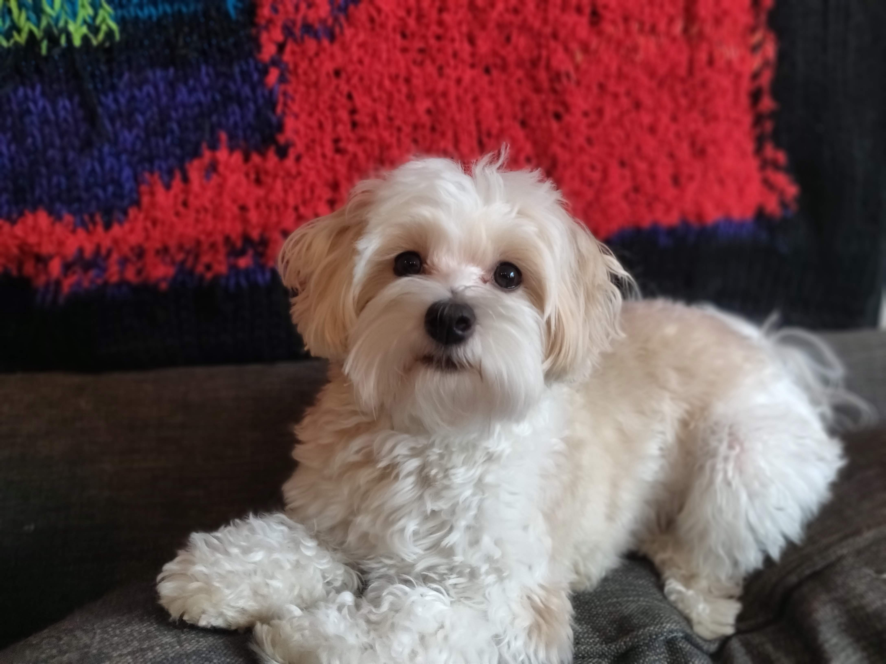
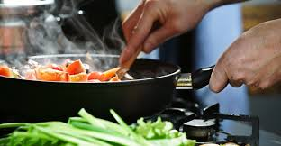

Rochelle absolutely loves plants and her garden. Since moving to her new condo in Belltown, Rochelle has made a beautiful little balcony garden. Her dog, Pippa, enjoys smelling the strawberries that are growing!

Pippa Pupperson is Rochelle's two-year-old Havanese dog. Pippa is only a 9-pound pup, and loves to play. Rochelle has taught Pippa a few tricks!
- Sit/Down
- Nose
- High five!

Cooking is a pashion for Rochelle. Most week nights, Rochelle makes a simple dinner to enjoy with her husband, Stephen. However, Rochelle is always trying new recipies when she has more time. For inspiration, Rochelle will go on Tasty.